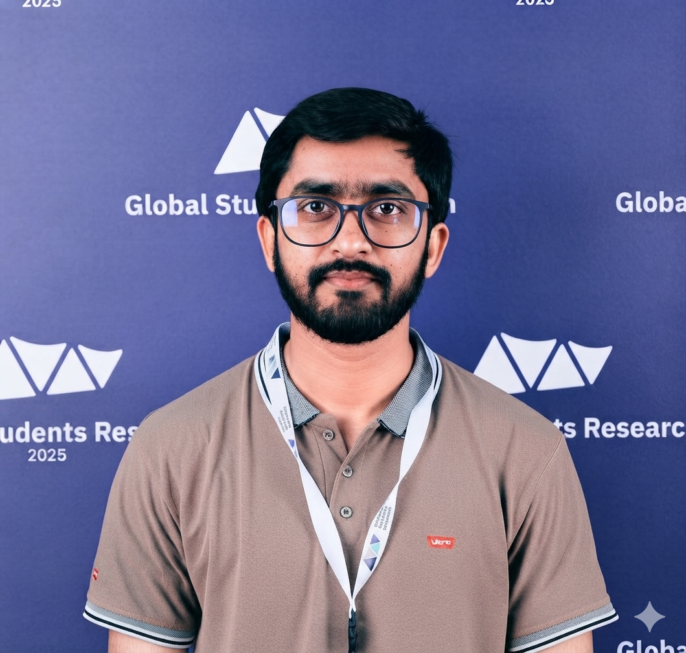

Demographic forecasting
Classical mortality models, including Lee Carter and related frameworks, for reliable long term demographic forecasting.
MSc Student in Applied Statistics
Mortality forecasting, spatial statistics, and machine learning for demographic and public health research.
I am an MSc student in Applied Statistics at King Fahd University of Petroleum and Minerals. My research combines demographic methods, spatial analysis, and machine learning to support clear and useful evidence for public health and social policy.

Profile
My master’s thesis examines geospatial and machine learning approaches to mortality modelling and forecasting in countries across the Middle East and North Africa.
I hold a Bachelor of Science in Statistics from The Islamia University of Bahawalpur, Pakistan. My work focuses on mortality forecasting, spatial statistical methods, and the use of machine learning in demographic and public health applications.
I am interested in developing interpretable statistical tools that help researchers and decision makers understand population health patterns, quantify uncertainty, and respond to changing demographic conditions.
Research
My current work develops hybrid mortality forecasting models that retain the interpretability of demographic methods while using machine learning and spatial information to capture complex patterns in the data.
Classical mortality models, including Lee Carter and related frameworks, for reliable long term demographic forecasting.
Residual learning and hybrid methods that improve predictive accuracy while preserving the strengths of established demographic models.
Geospatial techniques that account for regional heterogeneity, spatial dependence, and variable data quality across population datasets.
Publications
Selected journal articles, conference work, and ongoing manuscripts in mortality modelling, public health, and forecasting.
Rahman, A., Omar, M. H., Abbas, N., and Riaz, M. Mathematical Population Studies, 1 to 37.
Daniyal, M., Alyami, H., Alqahtani, A. J., Talha, M., Rahman, A., and Al Mutair, A. BMC Public Health, 26, Article 280.
Rahman, A., Omar, M. H., Mahmood, T., Abbas, N., Riaz, M., and Ramzan, N. Science of the Total Environment, 1003, Article 180709.
Poster presentation at the 39th International Workshop on Statistical Modelling, Limerick, Ireland.
Teaching and experience
Experience teaching statistical programming and supporting applied data analysis in academic settings.
King Fahd University of Petroleum and Minerals
King Fahd University of Petroleum and Minerals
King Fahd University of Petroleum and Minerals
Planning and Development Board, Lahore, Pakistan
Service and activities
Academic work is complemented by service, participation in university activities, and long standing involvement in sport.